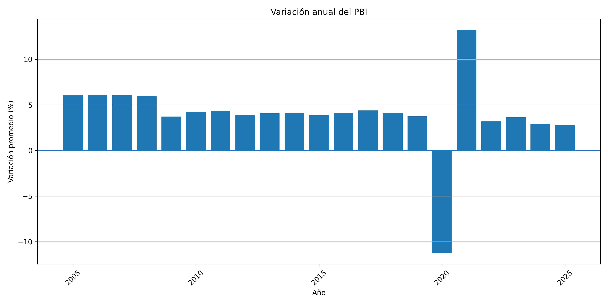
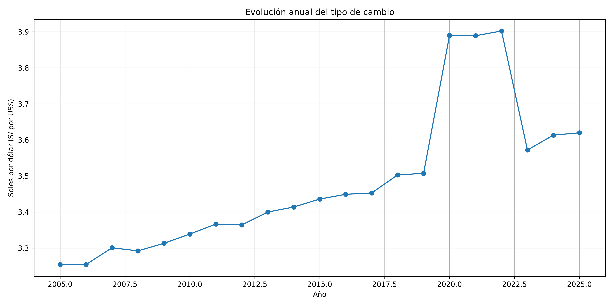
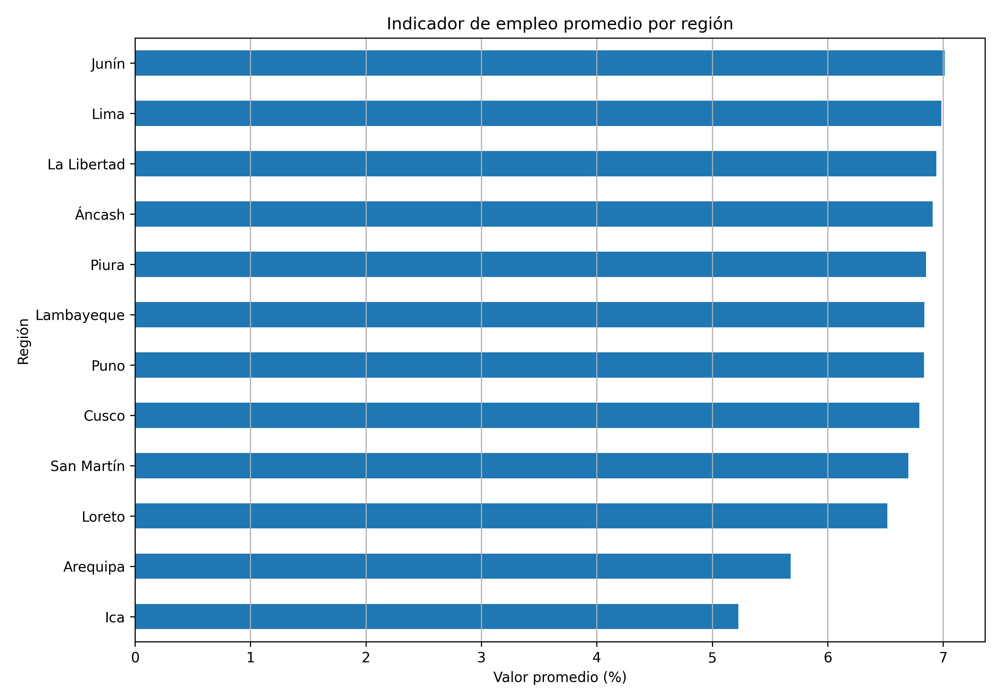

Inflación
Visualización de la evolución del indicador de inflación.

Datos, indicadores económicos y visualización con Python
Este proyecto académico tiene como finalidad analizar información económica del Perú mediante herramientas de programación y análisis de datos. Se utilizan Python, Pandas y Google Colab para organizar la información y representar visualmente los indicadores disponibles.
La página reúne los gráficos generados y permite consultar los archivos utilizados en el análisis.
Explora las visualizaciones generadas durante el desarrollo del proyecto.
Visualización de la evolución del indicador de inflación.
Representación del comportamiento del PBI.

Visualización de las variaciones del tipo de cambio.

Representación de los datos de empleo por regiones.

Consulta los archivos que respaldan el análisis económico.
Descargar base de datos CSV Descargar resumen CSV Consultar notebook Consultar documentaciónEl procedimiento comprende la carga de datos, revisión de la información, análisis de variables y elaboración de gráficos.
La visualización de los indicadores económicos facilita la interpretación de los datos y permite identificar sus variaciones a lo largo del tiempo. Las conclusiones específicas deberán sustentarse en los resultados obtenidos en el análisis.